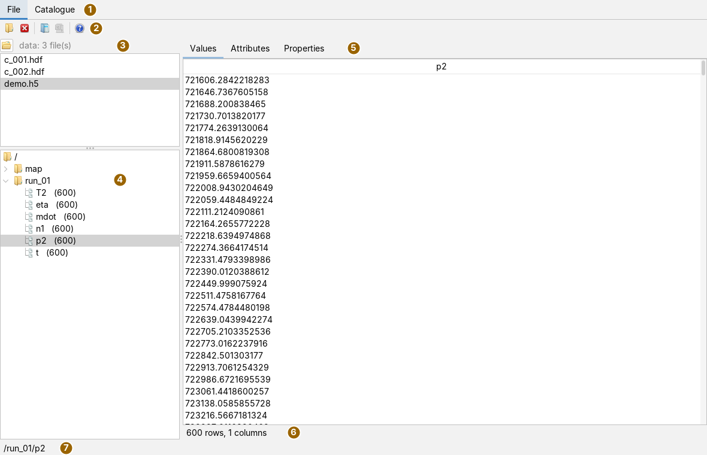
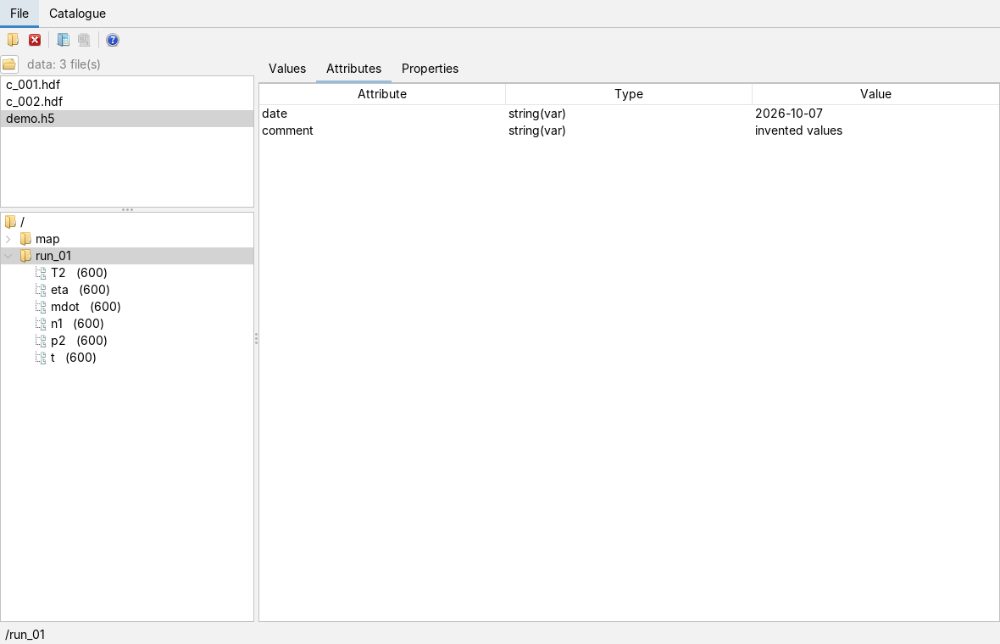
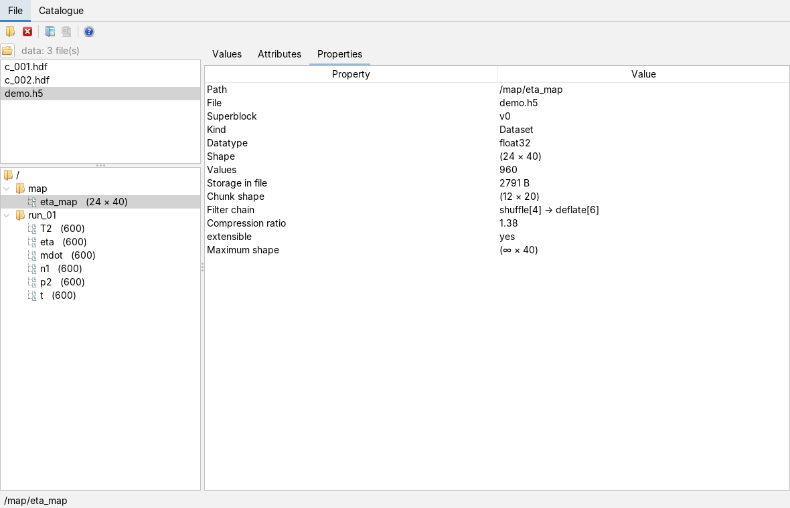
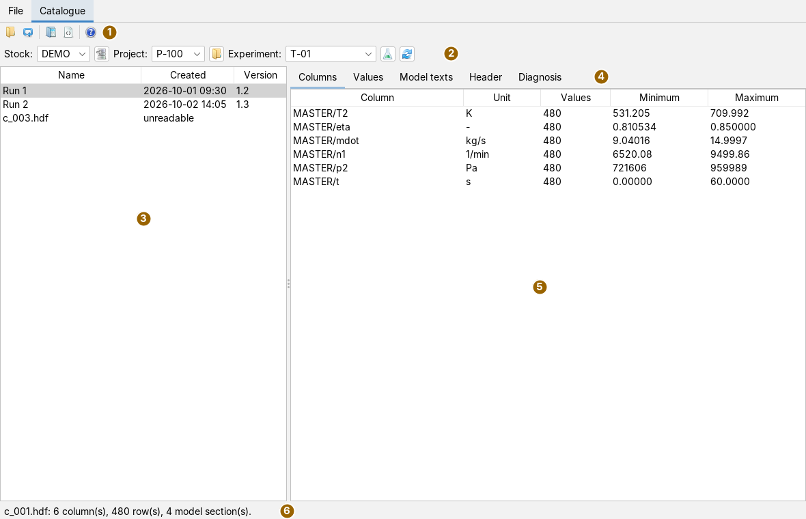
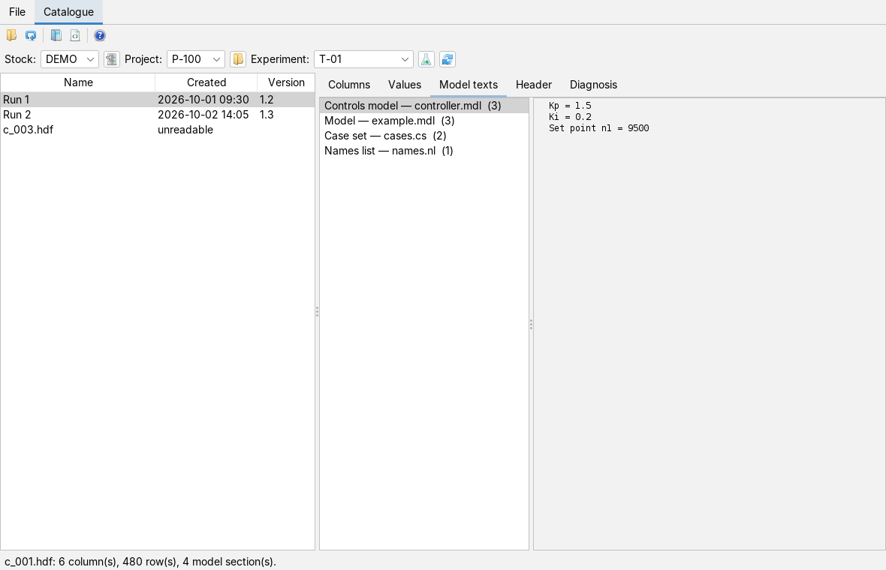
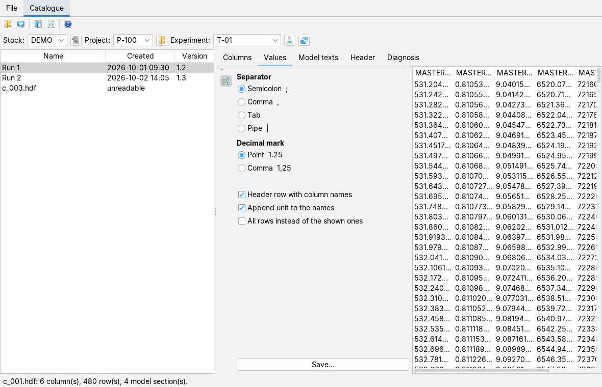
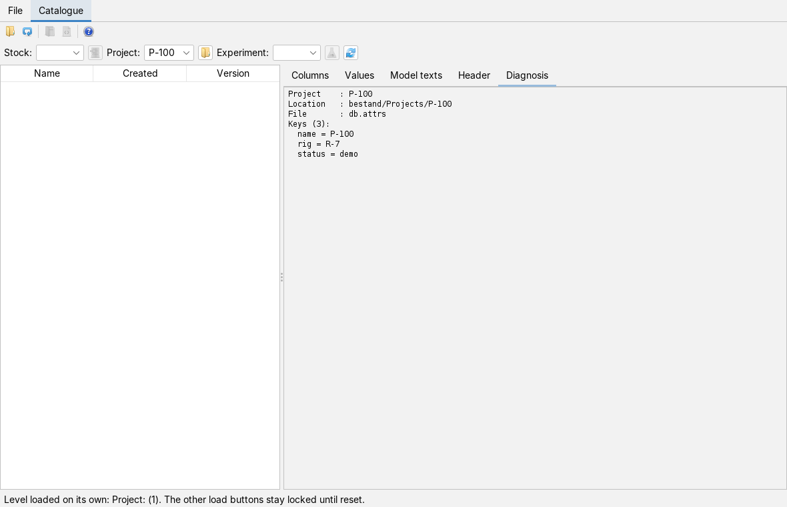

Viewing HDF5 files and experiment catalogues
User page, as of 7 October 2026. How to open an HDF5 file, move through its tree, look at the values, attributes and properties of a dataset and pass it on as a table; and how to reach a result file in the catalogue tab through stock, project and experiment, read its columns, values and model texts and save the values as CSV. The pictures are screenshots of the app with invented example files: a run-up with six series and a small map, plus a catalogue with one stock, two projects and three result files.
The window
Open the app from the Apps menu with Open HDF5 file… or with Alt+W. It has two main tabs: File for a single HDF5 file and Catalogue for result files stored in a fixed folder order. Both only read; there is no button that changes an HDF5 file.

Top left is the list of the working directory, below it the tree of the open file; on the right the three tabs for the selected node. Both dividers can be moved. After opening, the status line gives the file name, the number of datasets and the note read-only; after that the path of the selected node or the latest message.
The toolbar
The buttons carry icons only; what they do is in the tooltip. Load as table is active only once a node is selected in the tree, Save as CSV only after a table has been loaded.
| Icon | Tooltip | What happens |
|---|---|---|
 | Open an HDF5 file for viewing (read-only) | File chooser for *.h5, *.hdf5, *.he5 and *.hdf; the chosen file replaces the open one. |
 | Close the file and clear the tree | Closes the file; tree and tabs become empty. |
 | Provide the selected dataset or group as a table — for statistics, units and export | Turns the selected node into a table and provides it to the charts app (see Passing on as a table). |
 | Write the displayed table to a CSV file | Writes the most recently loaded table to a file. |
 | Help: opens the docs for this app (like F1) | Opens this page in the docs app, like F1. Without the docs app the status line gives the address of the online docs. |
Opening a file
There are two ways. The folder button in the toolbar opens a single file through the file chooser. For many files in one folder the working directory is more convenient:
- Press the button
 at the top left (Choose a working directory) and choose a directory.
at the top left (Choose a working directory) and choose a directory. - The list below shows all files with the extension
.hdf,.h5or.hdf5in that directory, sorted by name. Subdirectories are not searched. Next to the button are the name of the directory and the number of files, the full path in the tooltip. - A click on a name opens the file.
Opening reads only what is needed: the tree fetches the children of a group only when it is expanded. A large file therefore opens as fast as a small one. If the file is an HDF4 file (the extension .hdf is used for both formats), the status line says so and a notice window explains it; the tree stays empty. If a file cannot be read, an error window gives the reason.
The tree
The root is called /. Groups carry a folder icon, datasets a document icon and their shape after the name, for example p2 (600) for 600 values or eta_map (24 × 40) for a two-dimensional array. A click on a group shows its attributes and properties, a click on a dataset its values as well.
Values
The Values tab shows the selected dataset as a table:
| Dataset | Display |
|---|---|
| one-dimensional | one column named after the dataset |
| multi-dimensional | index columns i, j, k … and one value column; the last index runs fastest (the HDF5 order) |
| compound type | one column per member |
| strings | one column; fixed and variable length |
Numbers are read page by page, 4096 rows at a time, namely the page containing the visible rows. The line below the table gives rows and columns. Text and compound types are read completely, at most 200,000 rows; if the dataset is longer, the line says which part is shown.
Attributes and properties

The Attributes tab lists every attribute of the selected node with Attribute, Type (for example float64, int32, string(var), with several values followed by the count in square brackets) and Value.

The Properties tab gives for every node Path, File, the Superblock version and, if the file carries it, the modification time. For a group the number of its Children follows, for a dataset:
- Datatype, Shape and the number of Values;
- Storage in file in bytes and the Chunk shape (a dash for contiguous storage);
- the Filter chain in the order in which it was applied, and the Compression ratio;
- whether the dataset is extensible and, if so, its Maximum shape; ∞ stands for unlimited.
Passing on as a table
- Select a dataset or a group in the tree.
- Press Load as table. A dataset becomes a table as in the Values tab. A group has its one-dimensional series placed side by side; if they differ in length, the length that occurs most often applies and the other series are left out rather than padded or cut. The unit from the attribute
unitorUNITSis carried over. - The table is then available to the charts app (see Charts); the status line gives source, rows and columns.
- If you need the table as a file, press Save as CSV and choose a file name. It is written as UTF-8 with semicolon as separator, a header row with the column names and decimal point.
A table holds each value as text and thus needs about thirteen times the memory of the numbers. Hence a limit of 200,000 cells applies: above it a window says that the dataset is too large for the table form.
The catalogue tab
The Catalogue tab opens up result files stored in a fixed order: a stock contains projects, a project experiments, an experiment the result files. The entry point is a catalogue file with the extension .dbs that names the stocks.

| Icon | Tooltip | What happens |
|---|---|---|
| Open a catalogue file (.dbs) and read its stocks | Reads the catalogue file and selects the first stock, its first project and that project's first experiment. |
| Read the catalogue file again | Reads the same catalogue file once more, for example after something has been added on disk. | |
| Open the selected container file as an HDF5 tree in the "File" tab | Opens the selected file in the File tab and switches there. |
 | Inspect the selected file byte by byte — the hex viewer must be open | Hands the file to the hex viewer of file analysis; that must be open, otherwise the status line says so. |
| Help: opens the docs for this app (like F1) | Opens this page in the docs app. |
How a catalogue is built
The catalogue file is a text file with one line per stock; the fields are separated by commas, lines starting with # and empty lines do not count. The first field is the name of the stock. The stock's directory is the first field that points to an existing directory, preferably one with a subdirectory Projects; otherwise the second field. Below it the app expects:
<stock>/Projects/<project>/experiments/<experiment>/dtfs/*.hdfEvery directory under Projects is a project, every one under experiments an experiment. A property file db.attrs (or another *.attrs, *.attr) in it is not required; if it contains name=…, that is the displayed name, otherwise the name is formed from the directory name. An experiment without a dtfs folder still appears, marked (no files). Result files are *.hdf and *.hdf5.
Down to a file
- Press Open catalogue and choose the
.dbs. The app selects the first stock, its first project and that project's first experiment and fills the file list. - If needed, choose something else in Stock:, Project: and Experiment:; every choice refills the fields below it.
- The file list shows Name, Created and Version for each file, sorted by file name. Only the header of each file is read for this, not its content; a folder with hundreds of files thus stays usable. The name is the one stored in the file's header, otherwise the file name. A file that cannot be read stays in the list and is marked unreadable; selecting it makes the status line give the reason.
- Click a file. Its content is read in the background; afterwards the status line gives columns, rows and model sections.
The content tabs
| Tab | Content |
|---|---|
| Columns | per column Column, Unit, number of Values, Minimum and Maximum finite value. The column names come from the name directory in the header area of the file. |
| Values | the values as a matrix, one column per data column, at most 5000 rows; if the file has more, the status line says so. Columns of unequal length end in empty cells. |
| Model texts | the model files stored with the result: on the left the sections with kind, file name and number of lines, on the right the text of the selected section. |
| Header | all attributes of the header area, sorted by name. |
| Diagnosis | for the selected stock: every field of its catalogue line with a verdict, which directory is used, and the projects with the state of their property files. The text is computed only when the tab is in front. Whatever the reader skipped in a file is appended here. |

The column width in Values is fixed at 80 pixels; the table scrolls horizontally, and the full column name is in the tooltip of the column header. Columns can be made wider but not moved.
Saving values as CSV

Next to the value table is the card CSV output, opened through the icon in the narrow bar on the left edge. It stays visible while you look at the table:
- Separator: semicolon, comma, tab or pipe.
- Decimal mark: point or comma. For a German spreadsheet choose semicolon and comma. Comma as both separator and decimal mark is rejected, because the file could no longer be split.
- Header row with column names, and with Append unit to the names in the form
p2 [Pa]. - All rows instead of the shown ones: unticked the first 5000 rows, ticked all of them.
Save… suggests the name of the result file with the extension .csv and appends the extension if it is missing. The file is written as UTF-8; columns of unequal length get empty cells and are not shortened. The status line gives file, rows and columns.
Loading one level on its own
Sometimes there is no catalogue file at hand, or you only want to look at one project or experiment. For this there is a load button next to each selection field, plus a reset button. Their tooltips say in detail what they do; here is their short name:
| Icon | Button | What happens |
|---|---|---|
 | Load stocks | Choose a .dbs; only the stocks are read, the project and experiment fields stay empty. |
| Load projects | Choose a directory or a property file in it: a collection directory Projects (or one containing it) brings all projects from it, a single project directory exactly that one. |
 | Load experiments | Likewise for experiments: a collection directory experiments or a single experiment directory. |
| Reset | Clears all fields, the file list and the content tabs and releases all load buttons again. Always available. |

Loading one level on its own locks the load buttons of the other two; its own stays available for reading the same level again. As long as a level is loaded on its own, a choice in the selection field does not fill the level below. Instead a selected project shows its properties (location, property file, every key) in the Diagnosis tab; a selected experiment fills the file list and shows its properties likewise. Reset lifts the lock.
What is saved
When the workspace is saved, the app remembers the path of the file open in the File tab and opens it again at the next start, provided it is still readable; otherwise the tab stays empty, without an error window. Working directory, catalogue, selection and the settings of the CSV card are not saved. The app writes only the CSV files you save explicitly.
Keyboard and mouse
Alt+W opens the app, F1 this page. In the tree the arrow keys and a mouse click select; the right and left arrow keys and a double click expand and collapse a group. In the lists and tables the arrow keys and a mouse click select; column borders can be dragged with the mouse. The app has no other shortcuts.
Limits
- The app only reads. HDF4 files are recognised but not shown; it does not open netCDF files.
- The catalogue's value table shows at most 5000 rows; the CSV card can write all of them.
- Passing on as a table works up to 200,000 cells; the interface has no way to hand datasets directly to the charts as number arrays.
- The working directory is not searched recursively.
- The text in the Diagnosis tab for a stock is in German only and gives the full path of the stock.
- Only
*.hdfand*.hdf5count as result files in the catalogue, not*.h5.
What the app can do and what it builds on is in the overview; the HDF5 reader itself in fileformats.
Icons: Fugue Icons by Yusuke Kamiyamane, licence CC BY 3.0.